Ezequiel Velazquez Aka Godai
Kabayun es el proyecto de Ezequiel Velazquez, un productor de psytrance de los Estados Unidos. Después de pasar muchos años perfeccionando su sonido, actuando en los EE. UU. y organizando fiestas en la ciudad de Nueva York, Eze ha pasado los últimos 8 años centrado únicamente en su proyecto Gpdai. Ahora divide su tiempo entre su hogar en Lanus y sus giras por todo el mundo, actuando en muchas ciudades europeas, en América del Norte, del Sur y Central, Asia, India y Australia, y en muchos de los festivales de verano más importantes de Europa, incluidos Boom, Ozora. , MoDem, Lost Theory, Antaris, Hadra, Sonica y muchos más....
Después de lanzar su álbum debut en 2to6 Records en 2011, en 2012 Godai se unió al equipo de Looney Moon Records, con sede en Italia. En 2015 dejó Looney Moon y se unió a Sangoma Records, un sello con sede en Alemania que promueve el psytrance sin límites de género, lo que encaja perfectamente con su música, que flota en la zona fronteriza entre la noche llena, el crepúsculo, el bosque y la oscuridad. sacando elementos de cada uno, para un ambiente lleno de poder, psicodélico y muy bailable.
Sus pistas han aparecido en muchas compilaciones y lanzamientos de los principales sellos discográficos de psytrance a lo largo de los años. Actualmente, Ezequiel está trabajando en un montón de música nueva, así como en muchas colaboraciones con algunos de sus artistas favoritos y amigos en la escena.
La música de Godai tiene la intención de crear un ambiente que estimule al oyente a liberarse de las pruebas de la vida cotidiana y enfrentar sus desafíos a través de la experiencia del baile en trance. Canalizando el espíritu del oeste, Godai reúne muchos elementos para crear una experiencia intensamente psicodélica que eleva el cuerpo y la mente a mesetas desconocidas...